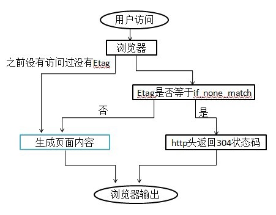
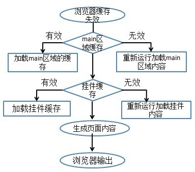
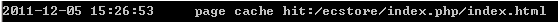
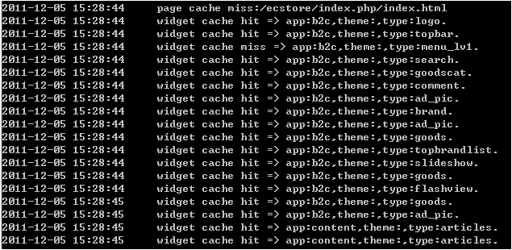
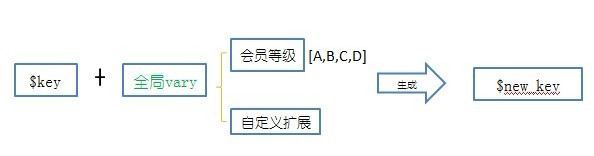
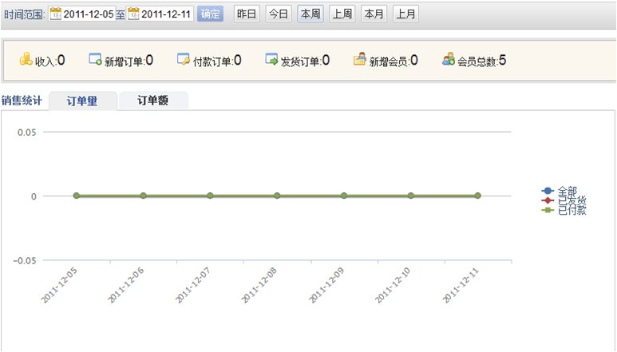

在ecos中设置了三层缓存结构，按顺序触发
| 层次 | 缓存名称 | 存放位置 |
|---|---|---|
| 1 | 基于http的浏览器缓存 | 用户浏览器本地 |
| 2 | 前台全页缓存 | /data/cache/secache.php |
| 3 | 模板缓存 | /data/kvstore/cache/Template |
调用流程图

浏览器都很聪明，他们懒的把同样的数据从网上下载两次。
如果用户访问过这个网站，那么我们会在系统的header头里放一个Etag标签。这个Etag数据是和页面的内容相关的，如果页面内容变了，Etag也会不同。
第一次访问一个shopex页面，服务器的返回情况， 使用抓包工具可以看到http头如下所示。
Server nginx/0.8.54 Date Mon, 04 Jul 2011 06:33:27 GMT Content-Type text/html;charset=utf-8 Transfer-Encoding chunked Connection keep-alive X-Powered-By PHP/5.3.5-1ubuntu7.2 Cache-Control public,max-age=1 X-Cache HIT from ecos-pagecache 2011-07-04 14:33:11 //生成全页缓存的时间 Etag 878c43f39335f4be2f92275cd65b9ed3 //header头存放的Etag标签 Content-Encoding gzip
最后一行就是Etag数据:878c43f39335f4be2f92275cd65b9ed3，当用户第二次访问这个页面的时候(访问，或者按F5刷新)，
浏览器会把Etag里的数据放在请求的http头中：
Host localhost User-Agent Mozilla/5.0 (X11; Linux i686; rv:5.0) Gecko/20100101 Firefox/5.0 Accept text/html,application/xhtml+xml,application/xml;q=0.9,*/*;q=0.8 Accept-Language zh-cn,zh;q=0.5 Accept-Encoding gzip, deflate Accept-Charset UTF-8,* Connection keep-alive Referer http://localhost/ecstore-bugfix/index.php/shopadmin/ Cookie s=000ce07480ffe56e4cec9be04f739479; vary=5657700ac3fb591e8d63271bb0f9a9726b14a9e2750671e6fbbfba8dfe436267 If-None-Match 878c43f39335f4be2f92275cd65b9ed3
最后一行：浏览器会把上次的etag值放在If-None-Match里面。如果网店程序端检测到:
1. 存在这个页面的全页缓存
2. 该全页缓存的页面数据未过期
3. 全页缓存的Etag值和浏览器传过来的If-None-Match得相同
则发送给浏览器一个304的头信息，浏览器就将自己本地缓存的页面数据直接显示出来，避免了网络传输。
此时，网络上传输的数据只有以上两次，并没有实际的内容传输，所以响应会非常快.
前台全页缓存加载流程图

当基于http的浏览器缓存机制被打破的时候,则会调用前台全页缓存,来生成全页缓存。
此时系统并不是为每次生成页面内容的请求都重新运行一次，而是将页面的结果整体缓存下来，
如果该页面所包含的数据都没有更新，则是直接输出被缓存下来的内容。
ecos在数据库的操作底层设置了一个触发动作，当有任何表的更新，插入，删除操作时，
将当时的时间和被操作的表明记录在一个特殊的表里:sdb_base_cache_expires.
此表的结构如下：
| Type | name | expire | app |
|---|
| 类型 | 缓存的名字| 操作时间| 所在的app|
| DB | SITE_SEO | 1309145527 | site |
如果发现有缓存过期的时候，则会生成新的全页缓存。此时先回判断其中的挂件缓存是否过期，如果没有过期这会
把没过期的挂件缓存直接进行加载,如果有过期挂件这生成新的挂件缓存，在加载到整体页面中，此时生成全页缓存
之后再进行输出。
在使用cmd查看的log日志的时候，可以看到前台全页缓存的加载过程，也可以看到缓存是否命中，是哪个挂件使得缓存失效，
这个就可以找到经常会影响缓存失效的数据，这样就可以通过ajax来调用数据，提高缓存命中率。
CMD查看到全页缓存有效,可以看到如果缓存有效hit命中

CMD查看到全页缓存失效时,就可以看到是哪个widgets是全页缓存失效，miss没有命中

问题：不同等级会员访问同一个商品详情页，商品的id是相同的，所以访问链接是相同的，但是不同等级会员显示的价格是不同的
，那这时我们对这个商品详情页是缓存一份数据还是根据不同会员等级缓存多份呢？如果是要缓存多份要怎么存放呢？
如果是只缓存一份，那么我们就可以看到，一个A级用户访问系统，那么我们就用一个标识这个页面的key来缓存一个A等级看到的页 面，而当一个B等级用户再来访问的时候，系统就根据这个页面的key还获取到的是A级用户的缓存来给B等级用户输出，那么这样B级用 户看到的是A等级用户看到的页面，因此在Ecstore中就引入了一个全局vary作为一个辅助变量使得完成一个页面标识key，缓存多份页面
Ecstore缓存key生成图：

$key 是唯一标识一个页面的key,Ecstore系统可通过这个key获取到对应页面的缓存
全局vary $key的一个辅助变量，影响页面内容（数据）的变量
$new_key 是$key加上全局vary生成的唯一标识缓存的key,例如：页面根据会员等级显示不同价格，那么就可以把会员等级作为
全局vary，那么这个页面的就根据$key加上获取到的会员等级生成$new_key，再来缓存当前等级的页面缓存
知道了全局vary的作用那么就来看看在Ecstore系统中目前已有那些全局vary
已有全局vary
base: host信息，是否支持rewirte,语言环境，ECAE环境
site: URL分隔符，是否启用扩展
b2c: 会员等级，货币
查看全局vary具体实现代码：在对应的app中的services.xml中找到 service ID 为 cachemgr_global_vary的标签，找到对应的类查看
<?php
class base_service_cachevary{
public function get_varys(){
$varys['HOST'] = kernel::base_url(true); //host信息
$varys['REWRITE'] = (defined('WITH_REWRITE')) ? WITH_REWRITE : ''; //是否有rewirte支持
$varys['LANG'] = kernel::get_lang(); //语言环境
return $varys;
}//End Function
}
那么如果在二次开发的时候需要添加全局vary这个扩展,这个时候就只需要在b2c这个全局vary类中参照b2c的写法扩展
注意：在扩展全局vary的时候需要注意的是，如果全局vary是 会员等级，货币。会员有4个等级，货币有2种，那么一个页面就会
缓存4X2=8份，如果再扩展的话就要保证一个页面不要缓存过多的份数
如果是要再其他的app中添加这个扩展，那么就只要扩展 cachemgr_global_vary 这个service，可参照b2c
静态全页缓存会忽略除全局vary的其实改变，而只检测expires.使用静态缓存需要注册service: site.router.cache, 实现该service 必需实现get_cache_methods方法，返回值格式为
class b2c_cache{
function get_cache_methods() {
return array(
array(
'name' => '商品详情页', //缓存名称
'app'=>'b2c', //app名称
'ctl'=>'site_product', //控制器名称
'act'=>'index', //方法名
'expires'=>'80', //静态缓存默认过期时间
),
);
}
}
通过前台全页缓存加载可以看到在全页缓存失效的时候，会加载widgets缓存，那么如果一个widgets中也会有一些系统变量会影响到widgets的显示数据
那么在widgets中提供了一个widgets vary,使一个widgets来缓存多份
Ecstore中已有的已有的widgets vary
member //用户等级 money //货币
扩展：写在全局vary扩展类中，参照b2c/lib/service/cachemgr/globalvary.php
$GLOBALS[‘runtime’][‘$vary_name’] = $vary_value; $vary_name widgets vary 的名字 $vary_value widgets vary 变量数据来源
使用：在widgets 中的 widgets.php 中添加
$setting[‘vary’] = ‘money’; //根据货币缓存 $setting[‘vary’] =‘money,member’; //根据member,money排列组合缓存
注意：wiogets必须缓存,如果有不需要的缓存数据则用ajax

如图：Ecstore后台报表当数据量大时，数据统计慢，但是报表是一天统计一次，数据更新慢，那么我们就可以把这个页 面缓存，或者把数据缓存，
做成一个区域缓存。
首先要找到影响你要缓存区域的数据获取或页面输出的代码代码在哪里,然后在参照下面格式写，先判断获取缓存，没有获取到则重新缓存
<?php
//获取缓存
if(cachemgr::get(md5(‘$cache_key_name‘),$content)){
return $content;//如果获取到缓存，返回缓存中的数据
}else{
//重新设置缓存
cachemgr::co_start(); //开始缓存
…
//这个是影响你要缓存区域的数据获取，或页面输出的代码
$cache_data =…; //要缓存的数据，或页面
…
//保存，结束缓存，cachemgr::co_end()是从co_start到co_end之间的代码调用到的数据表的最后修改时间和setConf配置最后修改的时间
//用于判断缓存是否有效
cachemgr::set(md5(‘$cache_key_name’),$cache_data,cachemgr::co_end());
}
如果看不懂可参照：site/lib/router.php dispatch方法中的缓存全页缓存
方法缓存，顾名思义是对一个方法进行运算后的数据进行缓存，如果在调用一个方法的时候输入的参数一般不变，并且在这个方法调用的数据较多，运算复杂，影响了程序运行的效率，那么就有必要使用方法缓存
平常调用一个方法：
$data = $this->kernel_single(‘$class_name’)->$action($params);
使用方法缓存
$data = cachemgr::exec(array‘$class_name’,’$action’),array(‘$params’),$ttl);
参数：
$class_name 需要缓存的方法的控制器
$action 需要缓存的方法
$params array 缓存方法调用的参数
$ttl 缓存的有效时间/秒
如果使用了方法缓存，那么只要在缓存有效期内，那么调用这个方法都是使用缓存的数据，如果缓存过期，则在运行一遍缓存的方法
一个缓存单元类似一个数据报，包含报头和报文，而一个缓存存储单元也包含一个头和一个正文
1、在一个缓存存储单元中头部包含的是影响这个缓存是否有效的信息，而缓存的正文则是缓存的内容 2、缓存存储单元的头部 影响缓存是否有效的信息是：这个缓存内容调用的数据表的的最后操作时间，和setConf配置的最后修改时间，这些信息会和sdb_base_cache_expire 中存储的信息去做对比
ecos中在设置一个缓存的时候，会收集这个缓存所调用的数据表的最后操作时间和所使用setConf配置的最后修改时间，放到缓存的头部，在获取缓存的时候则把这个头部的信息去和sdb_base_cache_expire做对比，不一致则缓存失效
在ecos中影响缓存有效的条目是放在 sdb_base_cache_expires 中的.
其中系统内置的有两个类型可以影响缓存的有效期，
1. DB类型
DB 类型的表示的是所对应的表进行了改变. 如果某个缓存中的所包含了对应表的数据改变了，那么这个缓存也就失效了。
2.CONF类型
CONF类型是配置信息的改变所让缓存失效。其配置信息是setConf()所配置的信息。
扩展：
如果需要扩展影响缓存有效期条目的类型可以调用 cachemgr 中的 set_modified方法，来进行扩展。参照setConf
<?php
public function setConf($key, $value){
if(base_kvstore::instance('setting/'.$this->app_id)->store($key, $value)){
$this->__appConf[$key] = $value; //todo：更新当前进程缓存
$this->set_modified($key);
return true;
}else{
return false;
}
}
如果全页缓存失效，最后可以调用到模板缓存.根据smarty原则，每个html文件会编译成一个php文件，
每次在调用执行html,则根据此html文件的最后的修改时间获取模板缓存，如果不存在模板缓存则需要从新编译，
再次进行模板缓存。
在开启缓存的情况下，购物车控制器不需要缓存，那这么样在开启全页缓存的前提下自定义关闭某个控制器缓存
在site/lib/router.php 中有个dispatch方法 可以找到这么一句话
<?php
...
//判断是否缓存
if(count($post)==0 && $this->_response->get_http_response_code()==200 && $this->has_page_cache_control()===true
&& $config_page_cache==='true')
$this->has_page_cache_control()
这个判断的是
$this->_response->get_header('cache-control', $header) //$header = no_cahce 或则是$header = no_store就可以了
那么如果要关闭一个控制器不要缓存那就只要在这个控制器的构造方法中写上
$this->_response->set_header(‘cache_control’,no_cache); 或则是$this->_response->set_header(‘cache_control’,no_store);也可以用site_controller中封装好的方法就可以
$this->set_no_cache();
或者是
$this->set_no_store();
cachemgr决定了哪些内容被缓存，缓存多久，如何被更新，怎样判别缓存过期。缓存存储器仅仅是负责缓存如何存放，如何读取。
当缓存过多时如何被自动删除，删除哪一些。
ecos系统默认的缓存存储器是secache。可以被替换为apc或者memcached.
secache 存储机制可以参考[ http://docs.dev.shopex.cn/shopex-b2c/#toc46]
如果要改成为memcache 或则memcached,则在config.php 文件中有要开启下面的配置(单个memcache服务)
# cache后端存储类
# define('CACHE_STORAGE', 'base_cache_nocache');
# define('CACHE_STORAGE', 'base_cache_secache');
# define('CACHE_STORAGE', 'base_cache_memcache');
define('CACHE_STORAGE', 'base_cache_memcached');
# cache memcache服务器配置
# socket 'unix:///tmp/memcached.sock'
# server '127.0.0.1:11211'
# multi 'unix:///tmp/memcached.sock,127.0.0.1:11211,127.0.0.1:11212'
define('CACHE_MEMCACHE_CONFIG','127.0.0.1,11211'); //前面是ip,后面是端口
#define('CACHE_MEMCACHE_CONFIG', '127.0.0.1:11211,127.0.0.1:11212'); //前面是ip,后面是端口
cachemgr提供了，判断缓存是否过期，缓存设置，获取缓存等。对缓存的管理都是在 base/lib/static/cachemgr.php 中进行管理
static public function init($with_cache=true)
初始化 根据配置文件判断是否需要开启缓存，如果开启缓存则配置文件选择缓存存储器，默认的存储器是secache
static public function enable()
判断是否开启缓存. return boolean
static public function get_modified($type, $vary_key)
获取modified 可以根据$type,和$vary_key获取到sdb_base_cache_expires中的数据,可以判断缓存是否过期。 return 时间戳
static public function set_modified($type, $vary_key, $time=0)
设置modified,其中的数据是放到sdb_base_cache_expires中的 可设置影响缓存的条目vary
static public function get($key, &$return)
获取缓存
参数 $key sting 缓存的key
&$return 返回缓存的内容
return boolean
static public function set($key, $content, $params=array())
设置缓存
参数： $key string 缓存的key
$content mixed 缓存的内容
$params array 影响缓存有效的varys和缓存有效时间
return boolean
static public function exec($func, $args, $ttl=3600)
方法缓存
参数 $func mixed 方法名
$args array 方法参数
$ttl int 有效期
return mixed
static public function co_start()
缓存检查开始
static public function co_end()
缓存检查结果
static public function instance()
获取cache_storage实例
static public function set_expiration($time)
设置当前区块过期时间
static public function get_key($key)
获取缓存key 参数 $key string 缓存的key return string 对原始的key进行处理过得key
static public function get_cache_check_version()
取得缓存版本
static public function get_cache_global_varys()
取得全局varys
static public function get_global_varys()
获取全局key_varys属性，将影响全局key的生成
static public function ask_cache_check_version($force=false)
询问缓存版本号
static public function get_cache_check_version_key()
获得版本号的key
static public function check_expires($type, $cache_name)
检查过期
static public function check_current_co_depth()
检查当前缓存深度
static public function check_current_co_objects_exists($type, $cache_name)
检查当前缓存层中是否已经check_expires 优化缓存性能
static public function store_vary_list($vary_list)
保存vary_list 将sdb_base_cache_expires 中的数据存放到kvstore中
static public function fetch_vary_list($force=false)
读取vary_list 先在kvstore中查找,如果没读到则到sdb_base_cache_expires中获取，再回写到kvstore
static public function status(&$msg)
查看缓存状态
static public function optimize(&$msg)
优化缓存
static public function clean(&$msg)
清空缓存
注意： 不是真正删除
只是迭代新的缓存版本号